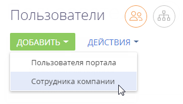

Для управления пользователями в Creatio используется раздел Пользователи системы. Настройки пользователя определяют, какие задачи пользователь может выполнять, какие данные может видеть и как с этими данными взаимодействовать.
Для перехода в раздел нажмите  — > “Пользователи системы”.
— > “Пользователи системы”.
Добавить пользователя с правами системного администратора
В системе доступна организационная роль “Системные администраторы” (“System administrators”), члены которой по умолчанию имеют полный доступ ко всем данным. Он достигается за счет доступа к следующим системным операциям:
-
“Добавление любых данных” (код “CanInsertEverything”);
-
“Удаление любых данных” (код “CanDeleteEverything”);
-
“Изменение любых данных” (код “CanUpdateEverything”);
-
“Просмотр любых данных” (код “CanSelectEverything”).
Подробнее: Описание системных операций.
Для создания нового пользователя с правами системного администратора:
-
В разделе Контакты добавьте контакт для нового пользователя или убедитесь, что соответствующий контакт уже существует. Подробнее: Добавить новый контакт.
-
В разделе Пользователи системы добавьте нового пользователя, указав контакт в профиле пользователя. Подробнее: Добавить нового пользователя.
-
Включите пользователя в роль “Системные администраторы” (System administrators).
Существует несколько способов назначить пользователю роль системного администратора:
-
Со страницы пользователя.
-
Со страницы ролей.
Способ 1. Назначить роль системного администратора со страницы пользователя
-
Нажмите
 — > Дизайнер системы — > “Пользователи системы”.
— > Дизайнер системы — > “Пользователи системы”. -
Откройте страницу пользователя — > вкладка Роли.
-
На детали Организационные роли нажмите
 и укажите роль “Системные администраторы” (Рис. 1).
и укажите роль “Системные администраторы” (Рис. 1).
В результате пользователь будет добавлен с ролью системного администратора и получит полный доступ ко всем данным.
Способ 2. Включить пользователя в роль системного администратора с помощью раздела [Организационные роли]
-
Нажмите
— > “Организационные роли“. -
В списке организационных ролей, представленном в виде древовидной иерархической структуры, выберите роль “Системные администраторы”. Справа от списка ролей откроется страница выбранной роли.
-
На вкладке Пользователи:
-
Если пользователь уже создан в системе, то нажмите
и выберите Добавить существующего. Во всплывающем окне выберите соответствующего пользователя (Рис. 2). -
Если пользователь еще не создан в системе, то нажмите
и выберите Добавить нового. После этого необходимо будет заполнить страницу нового пользователя.
-
В результате пользователь будет добавлен с ролью системного администратора и получит полный доступ ко всем данным.
Добавить пользователя-сотрудника
Для создания нового пользователя:
-
В разделе Контакты добавьте контакт для нового пользователя или убедитесь, что соответствующий контакт уже существует. Подробнее: Добавить новый контакт.
-
В разделе Пользователи системы добавьте нового пользователя, указав контакт в профиле пользователя. Подробнее: Создать пользователя.
-
Назначьте пользователю роль, если это необходимо. Подробнее: Назначить пользователю роли.
-
Предоставьте пользователю лицензии. Подробнее: Предоставить лицензии пользователю.
Добавить новый контакт
-
Раздел Контакты — > Добавить контакт.
-
Заполните страницу контакта и нажмите кнопку Сохранить (Рис. 3).
В результате в системе будет создан новый контакт, для которого можно создать пользователя.
Создать пользователя
-
Нажмите
—> “Пользователи системы”. - Нажмите Добавить — > Сотрудника компании (Рис. 4).
Рис. 4 — Выбор типа пользователя
- На открывшейся странице заполните следующие поля:
- Контакт — выберите пользователя из раздела Контакты.
- Тип — система заполнит поле автоматически после выбора типа пользователя в предыдущем шаге. Возможные значения поля — “Сотрудник компании” или “Пользователь портала”.
- Активен — признак будет автоматически отмечен для активных пользователей. Чтобы деактивировать пользователя, снимите данный признак.
- Культура — поле отображает информацию о языке приложения для текущего пользователя. Значение поля указывается автоматически, изменить язык можно в профиле пользователя.
-
Домашняя страница — укажите страницу раздела, которая будет открываться автоматически при входе пользователя в систему. Если вы оставите поле незаполненным, то пользователь будет перенаправлен в главное меню, а при последующих входах — на последнюю открытую страницу во время предыдущего сеанса.
-
Формат даты и времени — укажите формат, выбрав необходимый из выпадающего списка. Вы можете оставить поле незаполненным, и пользователь сможет указать эти данные позднее в своем профиле.
-
На детали Аутентификация заполните следующие поля:
-
Имя пользователя — укажите логин пользователя, под которым он будет входить в систему. Поле является обязательным для заполнения.
-
Email — укажите email-адрес пользователя, который он сможет использовать для входа в систему вместо логина. Если вы заполните это поле, то данный пользователь сможет войти в систему как по имени, так и по email-адресу.
-
Пароль, Подтверждение пароля — укажите пароль пользователя, с помощью которого он будет входить в систему. Поля являются обязательными для заполнения.
-
Дата окончания действия пароля — нередактируемое поле, отображает дату истечения срока действия пароля. Дата определяется на основании поля Значение по умолчанию системной настройки “Срок действия пароля, дни” (код “MaxPasswordAge”). Значение поля системной настройки по умолчанию — “0”, в этом случае пароль действует бессрочно, поле Срок действия пароля на странице пользователя остается пустым и заблокированным.
-
Сбросить пароль — установите этот признак, если вы хотите, чтобы пользователь изменил свой пароль при входе в систему. Если признак установлен, то система уведомит пользователя о том, что срок действия пароля истек и запросит изменение пароля при следующей попытке входа.
-
-
Сохраните страницу.
В результате новый пользователь будет добавлен в Creatio.